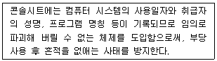

경비지도사-1차(법학개론,민간경비론) (2004-11-22 기출문제)
1과목: 법학개론
1. 다음 민법상의 원칙들 중 공공복리의 원리와 거리가 가장 먼 것은?
- 계약자유의 원칙
- 신의성실의 원칙
- 반사회질서행위금지의 원칙
- 권리남용금지의 원칙
(정답률: 50%)

2. 갑은 사제폭탄을 제조, 정 소유의 가옥에 투척하여 을을 살해하고 병에게 상해를 입혔다. 그리고 정 소유의 가옥은 파손되었다. 이러한 경우 살인죄, 상해죄, 손괴죄의 관계는?
- 누범
- 포괄적 일죄
- 상상적 경합범
- 경합범
(정답률: 43%)
3. 범죄의 형태에 관한 설명이다. 옳지 않은 것은?
- 실행의 수단 또는 대상의 착오로 인하여 결과의 발생이 불가능하더라도 위험성이 있는 때에는 처벌한다.
- 두 사람이상이 공동으로 범죄를 행하는 경우 각자를 그 죄의 정범으로 처벌한다.
- 미수범을 처벌하는 것이 원칙이다.
- 장애미수범에 대하여는 기수범에 비하여 그 형을 감경할 수 있다.
(정답률: 48%)
4. 사용자가 근로자를 해고시키기 위해서는 '정당한 사유'가 있어야 하는바, 다음 중 정리해고의 정당성을 위한 요건이 아닌 것은?
- 해고를 하지 않으면 기업경영이 위태로울 정도의 급박한 경영상의 필요성이 존재할 것(급박한 경영상의 필요성)
- 경영방침이나 작업방식의 합리화, 신규채용의 금지, 일시휴직 및 희망퇴직의 활용 등 해고회피를 위한 노력을 다하였어야 할 것(해고회피의 노력)
- 합리적이고 공정한 기준을 설정하여 이에 따라 해고 대상자를 선별할 것(해고대상자선별의 합리성·공정성)
- 해고대상자의 신속한 재취업 및 조속한 사회복귀와 정서적 불안감의 해소를 고려하여 해고사유 지득 당일 해고를 통보할 것(신속한 해고절차 유지)
(정답률: 66%)
5. 범죄의 성립요건에 관한 다음 설명 중 옳지 않은 것은?
- 당해 행위를 한 주체인 행위자에 대한 비난가능성, 즉 책임능력자의 고의 또는 과실이 있어야 한다.
- 행위자가 자신의 행위에 대한 사실의 인식과 위법성의 인식이 있어야 한다.
- 법률이 정하는 구성요건에 해당하는 행위를 하여야 한다.
- 일개의 행위가 원칙적으로 법률이 규정한 수개의 죄에 해당하는 경우이어야 한다.
(정답률: 55%)
6. 형법상 공범에 관한 설명 중 틀린 것은?
- 어느 행위로 인하여 처벌되지 아니하는 자를 교사하여 범죄행위의 결과를 발생하게 한 자도 처벌한다.
- 교사를 받은 자가 범죄의 실행을 승낙하고 실행의 착수에 이르지 아니한 때에는 교사자와 피교사자를 음모 또는 예비에 준하여 처벌한다.
- 2인 이상이 공동으로 죄를 범한 때에는 각자를 그 죄의 정범으로 처벌한다.
- 종범은 정범과 동일한 형으로 처벌한다.
(정답률: 49%)
7. 근로기준법상 근로조건에 관한 설명 중 틀린 것은?
- 근로기준법에서 정하는 근로조건은 최저기준이므로 근로관계당사자는 이 기준을 이유로 근로조건을 저하시킬 수 없다.
- 근로조건은 근로자와 사용자가 동등한 지위에서 자유의사에 의하여 결정하여야 한다.
- 사용자가 경영상 이유에 의하여 근로자를 해고하고자 하는 경우에는 긴박한 경영상의 필요가 있어야 한다. 경영악화를 방지하기 위한 사업의 양도· 인수· 합병은 긴박한 경영상의 필요에 해당하지 않는다.
- 근로기준법에 정한 기준에 미치지 못하는 근로조건을 정한 근로계약은 그 부분에 한하여 무효로 하며, 무효로 된 부분은 근로기준법에 정한 기준에 의한다.
(정답률: 49%)
8. 다음 중 공법과 사법의 구별 기준에 관한 학설의 내용으로서 거리가 먼 것은?
- 공익을 위한 것인가 사익을 위한 것인가에 따라 구별한다.
- 권력적인 것인가의 여부에 따라 구별한다.
- 권리의무의 주체에 따라 구별한다.
- 법규의 명칭에 따라 구별한다.
(정답률: 42%)
9. 다음중 권리에 대한 설명으로 타당하지 않은 것은?
- 재산적 이익을 내용으로 하는 권리를 재산권이라 한다.
- 권리는 타인을 위하여 그 자에 대하여 일정한 법률효과를 발생케하는 행위를 할 수 있는 법률상의 자격이다.
- 권리는 일정한 이익을 향수케 하기 위하여 법이 부여한 힘이다.
- 형성권이란 권리자의 일방적 의사표시에 의하여 법률관계를 변동시킬 수 있는 권리이다.
(정답률: 40%)
10. 다음은 형사재판에 있어서 거증책임과 관련된 내용이다. 타당하지 않은 것은?
- 법관의 자유심증주의 원칙이 적용된다.
- 의심이 가는 피고인의 자백은 증거능력이 없다.
- 피고인이 행한 행위의 사실인정은 증거에 의해야 한다.
- 형사재판에 있어서의 거증책임은 피고인에게 있다.
(정답률: 43%)
11. 다음은 행정처분에 관한 설명이다 타당하지 않은 것은?
- 행정처분은 행정청이 행하는 공권력 작용이다.
- 행정처분에는 조건을 부가할 수 없다.
- 경미한 하자있는 행정처분에는 공정력이 인정된다.
- 행정처분에 대해서만 항고소송을 제기할 수 있다.
(정답률: 59%)
12. 법과 도덕의 관계에 대한 설명으로 틀린 것은?
- 법은 인간의 외면적 행위를 주로 규율하고, 도덕은 인간의 내면적 의사를 주로 규율한다.
- 법은 권리· 의무의 양측면을 규율하고, 도덕은 의무적 측면만을 규율하므로, 권리가 없거나 의무가 없는 법은 존재하지 않는다.
- 법은 때에 따라서는 '선의' 또는 '악의'와 같은 인간의 내부적 의사를 중요시한다.
- 법의 효력은 국가의 강제력에 의하여 보장되는데 반하여, 도덕은 개인의 양심에 의해 구속받는다.
(정답률: 37%)
13. 법원에 대한 다음 설명 중 옳은 것은?
- 판례법은 법적 안정성 및 예측가능성 확보에 유리하다.
- 우리 민법 제1조는 조리의 법원성을 인정하고 있다.
- 불문법은 시대의 변화에 즉각적으로 대처하지 못한다.
- 관습법은 권력남용이나 독단적인 권력행사를 막는 장점이 있다.
(정답률: 52%)
14. 미국항구에 정박 중이던 우리나라 선박에서 선적작업을 하던 일본인 선원이 미국인을 살해한 경우에 다음 중 맞는 것은?
- 세계주의 원칙에 따라 우리 형법으로 처벌이 가능하다.
- 일본인이 범한 범죄이므로 우리 형법으로 처벌이 불가능하다.
- 속지주의 원칙에 따라 우리 형법으로 처벌이 가능하다.
- 미국 내에서 범한 범죄이므로 미국형법으로만 처벌이 가능하다.
(정답률: 40%)
15. 불법행위로 인한 손해배상책임의 성립요건으로 타당하지 않은 것은?
- 고의 또는 과실에 의한 행위일 것
- 위법행위
- 중대한 과실에 의한 행위일 것
- 손해의 발생
(정답률: 42%)
16. 국내법과 헌법에 의하여 체결, 공포된 조약의 관계를 바르게 설명한 것은?
- 국내법과 조약은 동일한 효력을 갖는다.
- 조약은 국내법에 우선하여 적용된다.
- 조약은 헌법과 동일한 효력을 갖는다.
- 국내법은 조약에 우선하여 적용된다.
(정답률: 63%)
17. 다음 중 범죄의 분류상 성질이 다른 죄는?
- 협박죄
- 절도죄
- 사기죄
- 강도죄
(정답률: 45%)
18. 다음 중 권리의 주체에 대한 설명으로 틀린 것은?
- 행위능력은 모든 자연인에게 인정되고 있다.
- 자연인은 생존한 동안 권리와 의무의 주체가 된다.
- 실종선고를 받은 자는 실종기간이 만료하면 사망한 것으로 본다.
- 민법은 권리능력자로서 자연인과 법인을 인정하고 있다.
(정답률: 58%)
19. 다음 중 행정행위의 특징으로 볼 수 없는 것은?
- 다음 행정처분에 대한 내용적인 구속력인 기판력
- 일정기간이 지나면 그 효력을 다투지 못하는 불가쟁성
- 당연무효를 제외하고는 일단 유효함을 인정받는 공정력
- 법에 따라 적합하게 이루어져야 하는 법적합성
(정답률: 20%)
20. 다음 중 소송으로 구제를 받을 수 없는 것은?
- 지상권
- 임차권
- 소유권
- 반사적 이익
(정답률: 74%)
21. 범죄구성요건에 해당하는 위법한 행위가 책임을 질 수 있는 자에 의해 행하여졌을 때 범죄가 성립한다. 다음 중 우리 형법상 책임조각사유가 되는 경우는?
- 밀항하기로 하고 선주에게 도항비를 주었으나, 그 후에 밀항을 포기한 경우
- 저항할 수 없는 폭력에 의하여 절도행위를 한 경우
- 설탕을 먹여서 사람을 죽이려고 한 경우
- 범인이 자의로 실행에 착수하였으나, 스스로 행위를 중지한 경우
(정답률: 53%)
22. 고소에 관한 설명 중 틀린 것은?
- 고소를 취소한 자는 다시 고소할 수 없다.
- 고소 또는 그 취소는 본인이 직접 하여야 한다.
- 고소는 제1심 판결선고 전까지 취소할 수 있다.
- 고소는 구술 또는 서면으로써 검사 또는 사법경찰관에게 하여야 한다.
(정답률: 57%)
23. 법의 형식적 효력에 관한 다음 기술 중 타당하지 않은 것은?
- 법률은 법률의 규정이 없는 한, 그 공포일로부터 20일이 경과하면 효력을 발생한다.
- 한시법에 있어서 시행기간이 경과하여 적용되지 않게 된 경우, 이는 명시적 폐지에 해당한다.
- 구법에 의해 취득한 기득권은 신법의 시행으로 소급하여 박탈하지 못한다는 원칙은 절대적인 것이어서 입법으로도 제한할 수 없다.
- 범죄행위가 있은 후 법률의 변경에 의하여 그 행위가 범죄를 구성하지 아니하거나 형이 구법보다 가벼운 때에는 신법에 의한다.
(정답률: 53%)
24. 다음 중 법의 적용 및 해석에 관하여 맞게 기술한 것은?
- 문리해석은 유권해석의 한 유형이다.
- 법률용어로 사용되는 선의· 악의는 일정한 사항에 대해 아는 것과 모르는 것을 의미한다.
- 유사한 두 가지 사항 중 하나에 대해 규정이 있으면 명문규정이 없는 다른 쪽에 대해서도 같은 취지의 규정이 있는 것으로 해석하는 것을 준용이라 한다.
- 간주란 법이 사실의 존재· 부존재를 법정책적으로 확정하되, 반대사실의 입증이 있으면 번복되는 것이다.
(정답률: 31%)
25. 헌법상 기본권에 관한 다음 기술 중 옳게 설명한 것은?
- 사유재산제도를 인정하는 현행헌법상 재산권의 보유 및 행사는 절대적으로 보장되고 있다.
- 주관적 공권이 아닌 전통적으로 형성된 기존제도를 헌법이 특히 보장하는 것을 기본권보장이라고 한다.
- 기본권의 내용상 분류에 의하면 근로의 권리는 청구권적 기본권에 속한다.
- 인간으로서의 존엄· 가치와는 달리 행복추구권· 평등권· 참정권은 법률로써 제한할 수 있다.
(정답률: 43%)
26. 헌법상 통치구조에 관한 다음 기술 중 옳지 않은 것은?
- 법원의 재판에 이의가 있는 자는 헌법재판소에 헌법소원심판을 청구할 수 있다.
- 헌법재판소는 지방자치단체 상호간의 권한의 범위에 관한 분쟁에 대하여 심판한다.
- 행정법원은 행정소송사건을 담당하기 위하여 설치된 것으로서 3심제로 운영된다.
- 법원의 재판에서 판결선고는 항상 공개하여야 하지만 심리는 공개하지 않을 수 있다.
(정답률: 19%)
27. 형사소송법에 관하여 옳게 기술한 것은?
- 법관이 제척사유가 있는데도 불구하고 재판에 관여하는 경우 당사자의 신청에 의하여 그 법관을 직무집행에서 탈퇴시키는 제도를 회피라 한다.
- 형사사건으로 국가기관의 수사를 받는 자를 피고인이라 하며, 확정판결을 받은 수형자와 구별된다.
- 수사기관은 주관적으로 범죄의 혐의가 있다고 판단하는 때에는 객관적 혐의가 없을 경우에도 수사를 개시할 수 있다.
- 형사절차의 개시와 심리가 소추기관이 아닌 법원의 직권에 의하여 행해지는 것을 직권주의라고 한다.
(정답률: 37%)
28. 다음은 실정법 해석상의 일반원칙을 설명한 것이다. 가장 틀린 것은?
- 사법의 해석은 당사자의 대등관계를 전제로 하므로 당사자간의 이익형량과 공평성이 유지되도록 해석하여야 한다.
- 행정법은 기술성· 구체성을 가지므로 헌법의 가치를 실현할 수 있도록 해석해야 하고, 실질적 법치주의의 실현과 구체적 타당성의 확보를 위하여 목적론적 해석이 이루어져야 한다.
- 사회법의 해석은 그 성격이 당사자 사이의 관계를 실질적으로 보완하기 위한 법이므로 이들 사이의 실질적인 법적평등이 보장되는 방향으로 해석해야 한다. 따라서 약자 보호의 측면이 강조된다.
- 헌법은 국가의 기본법이며 정치적 성격이 강하고 공익우선적 법이므로 국가에게 유리하도록 해석하여야 한다.
(정답률: 58%)
29. 다음은 판결의 종류를 설명한 것이다. 그 설명이 틀린 것은?
- 원고의 청구권을 인정하고 피고에게 의무이행을 명하는 것을 내용으로 하는 판결을 이행판결이라 한다.
- 권리· 법률관계의 존재나 부존재를 확정하는 것을 내용으로 하는 판결을 확인판결이라 한다.
- 종국판결은 소송사건의 심리가 다 끝난 뒤에 선고하여 그 심급을 종결시키는 판결로서, 일반적으로 판결이라 하면 이를 말한다.
- 원고의 청구가 이유없다고 배척하는 판결, 즉 원고를 패소시키는 판결을 각하판결이라 한다.
(정답률: 45%)
30. 법의 적용과 관련된 다음 기술 중 타당하지 않은 것은?
- 재판의 과정을 살펴보면, 먼저 적용될 추상적 법규를 대전제로 하고, 구체적 사건을 소전제로 하며 여기에 재판이라는 결론을 도출하는 3단논법의 형식이 적용된다.
- 민법 제28조에서 '실종선고를 받은 자는 실종기간이 만료한 때 사망한 것으로 본다'고 규정한 것은 '사실의 추정'의 예라 할 수 있다.
- 사실의 존부는 증거에 의해 확정되며 이를 증거재판주의라고 부른다.
- 확정되지 못한 사실을 잠정적으로 확정된 것처럼 법률 효과를 발생시키는 것을 '사실의 추정'이라고 한다.
(정답률: 38%)
31. 재산권에 대한 다음 설명 중 잘못된 것은?
- 채무의 강제이행시 수인의 채권자가 있다면 모든 채권자들은 채권성립의 선후와 관계없이 평등하게 다루어진다.
- 재산권은 물권과 채권으로 대별된다.
- 소유권은 물건을 사용, 수익, 처분할 수 있는 권리로서 우리 헌법은 재산권을 절대적으로 보장하고 있다.
- 법률과 관습법이 인정하는 물권이외에는 당사자들이 마음대로 새로운 물권을 창설할 수 없다.
(정답률: 37%)
32. 주식회사에 관한 다음 설명 중 옳지 않은 것은?
- 상법상 주식은 원칙적으로 타인에게 이를 양도할 수 있다.
- 주주는 그가 가지는 주식의 수에 비례하여 회사에 대하여 평등한 권리· 의무를 갖는다.
- 주식은 자본의 균등한 구성단위로서의 뜻뿐만 아니라 사원으로서의 지위라는 뜻을 가지고 있다.
- 회사는 자기의 계산으로 자기의 주식을 취득할 수 없다.
(정답률: 50%)
33. 민사소송의 주체에 관한 다음 설명 중 옳은 것은?
- 보통재판적은 원칙적으로 원고의 주소지이므로, 일단 원고의 주소지를 관할하는 지방법원에 소를 제기하면 토지관할을 갖추게 된다.
- 민사소송을 제기할 수 있는 자격 또는 지위를 당사자 능력이라고 하며, 이는 민법상 권리능력과 동일하다.
- 소송대리인은 변호사가 아니라도 원칙적으로 무방하다.
- 미성년자는 소송능력이 없으므로 그 법정대리인이 소송행위를 대리한다.
(정답률: 34%)
34. A상가의 경비책임자인 을의 부주의로 인해 갑점포에 도둑이 들었다. 이 경우 경비책임자인 을의 민사상 손해배상책임과 관련한 다음 설명 중 옳지 않은 것은?
- 불법행위로 인한 손해배상에 있어서는 정신적 손해가 포함될 수 없다.
- 을은 갑에 대해 계약상의 손해배상책임을 부담할 수도 있다.
- 갑이 을에게 불법행위에 기한 손해배상을 청구하기 위해서는 을에게 고의 또는 과실이 인정되어야 한다.
- 을의 불법행위책임이 인정되려면, 을의 부주의한 행위와 갑의 손해사이에 인과관계가 인정되어야 한다.
(정답률: 38%)
35. 여러 채무자가 같은 내용의 급부에 관하여 각각 독립해서 전부의 급부를 하여야 할 채무를 부담하고 그 중 한 채무자가 전부의 급부를 하면 모든 채무자의 채무가 소멸하게 되는 다수당사자의 채무관계는?
- 분할채권관계
- 연대채무
- 보증채무
- 양도담보
(정답률: 52%)
36. 다음 중 법률행위의 효력발생요건이 아닌 것은?
- 당사자가 의사능력· 행위능력을 가지고 있을 것
- 법률행위의 목적이 확정· 가능· 적법· 사회적 타당성이 있을 것
- 의사와 표시가 일치하고 하자가 없을 것
- 당사자가 존재할 것
(정답률: 34%)
37. 다음에서 위법성을 조각하는 사유가 아닌 것은?
- 본인의 자유로운 처분이 불가능한 법익에 대한 피해자의 승낙 행위
- 타인의 법익에 대한 부당한 침해를 방위하기 위하여 상당한 이유가 있는 행위
- 타인의 법익에 대한 현재의 위난을 피하기 위하여 상당한 이유가 있는 행위
- 법령에 의한 행위 또는 업무로 인한 행위
(정답률: 38%)
38. 우리 나라 헌법에 관한 설명 중 틀린 것은?
- 대통령의 계엄선포권을 규정하고 있다.
- 국무총리의 긴급재정경제처분을 규정하고 있다.
- 국가의 형태로서 민주공화국을 채택하고 있다.
- 국제평화주의를 규정하고 있다.
(정답률: 49%)
39. 민법 제1조「민사에 관하여 법률에 규정이 없으면 관습법에 의하고 관습법이 없으면 조리에 의한다」에 대한 설명으로 옳지 않은 것은?
- 법률을 가장 중요한 법원으로 삼음으로써 성문법우선 주의를 취하고 있다.
- 법원의 종류와 효력순위에 대해 규정하고 있다.
- 불문법으로 인정되는 범위는 관습법과 조리에 한정되지 않는다는 것이 다수설적 견해이다.
- 조리는 사물의 본성을 말한다.
(정답률: 20%)
40. 회사의 권리능력에 관한 설명으로 잘못된 것은?
- 회사는 유증(遺贈)을 받을 수 있다.
- 회사는 상표권을 취득할 수 있다.
- 회사는 다른 회사의 무한책임사원이 될 수 있다.
- 회사는 명예권과 같은 인격권의 주체가 될 수 있다.
(정답률: 58%)
2과목: 민간경비론
41. 첨단식 패드록 잠금장치의 종류가 아닌 것은?
- 기억식 잠금장치
- 일체식 잠금장치
- 이중식 잠금장치
- 전기식 잠금장치
(정답률: 56%)
42. 내부경비에 관한 설명으로 틀린 것은?
- 안전유리의 궁극적인 목적은 침입을 시도하는 강도가 창문을 깨는데 걸리는 시간을 지연시키는데 있다.
- 화물통제에 있어서는 화물이나 짐이 외부로 반출되는 경우에 한해서만 철저한 조사가 필요하다.
- 카드작동식 자물쇠는 종업원들의 출입이 빈번하지 않은 제한구역에서 주로 사용된다.
- 외부 침입자들의 대부분은 창문을 통해 내부로 들어 온다.
(정답률: 75%)
43. 민간경비와 공경비의 공통적인 목적으로 맞는 것은?
- 공공기관보호, 시민단체옹호, 영리기업보존
- 범죄예방, 범죄감소, 사회질서유지
- 범죄대응, 체포와 구속, 초소근무 철저경비
- 일반시민보호, 정책결정, 공사경비철저
(정답률: 75%)
44. 한국의 민간경비산업에 대한 설명 중 옳은 것은?
- 2001년 경비업법 개정은 시설경비업무를 더욱 강화하였다.
- 경비회사의 수나 인원면에서 기계경비에의 의존도가 매우 높다.
- 한국민간경비업계는 "86년 아시안 게임, 88년 서울올림픽, 93년 대전엑스포를 계기로 급성장하였다.
- 일반 국민들이 기계경비의 필요성과 효율성을 인식하는 단계에까지는 아직 이르지 못했다.
(정답률: 70%)
45. 다음 중 각국의 민간경비에 대한 설명으로 맞는 것은?
- 한국의 청원경찰제도는 다른 나라에서도 활성화되어 있다.
- 미국은 제2차 세계대전을 계기로 민간경비가 비약적으로 발전하였다.
- 일본의 민간경비는 제2차 세계대전 이후 지속적인 발전을 거듭하여 1970년대 초 한국에 진출하였다.
- 영국의 레지스 헨리시법(The Legis Henrici Law)은 공경비 차원의 경비개념에서 민간 차원의 경비개념으로 바뀌게 한 결과를 가져왔다.
(정답률: 60%)
46. 컴퓨터범죄의 유형 중 컴퓨터 부정조작의 종류가 아닌 것은?
- 프로그램조작
- 콘솔조작
- 입출력조작
- 데이터파괴조작
(정답률: 59%)
47. 기계경비시스템의 3대 기본구성요소에 포함되지 않는 것은?
- 불법침입에 대한 감지
- 침입정보의 전달
- 침입행위의 대응
- 광범위한 감시효과
(정답률: 48%)
48. 홈시큐리티(Home Security)의 기능에 대한 설명으로 틀린 것은?
- 앞으로의 고령화시대에 있어서 좋은 대안이 되고 있다.
- 홈시큐리티는 주로 기계경비시스템을 중심으로 서비스가 실시되고 있다.
- 홈시큐리티의 발전은 풍부한 부가가치를 창출할 수 있다.
- 비상경보가 전화회선을 통하여 정보가 전달되기 때문에 정보량에 한계가 없다.
(정답률: 64%)
49. 우리나라의 민간경비원에 대한 설명으로 틀린 것은?
- 직무범위는 일정한 사적 영역이고 운송 및 혼잡경비도 가능하다.
- 특수경비원은 국가중요시설 경비업무수행 중 국가 중요시설의 정상적인 운영을 해치는 행동을 해서는는 안된다.
- 시설주의 관리권 행사 범위 안에서 경비업무를 수행한다.
- 담당하는 경비구역에서는 경찰관직무집행법에 의한 직무를 수행할 수 있다.
(정답률: 79%)
50. 다음 중 계약경비서비스의 장점이 아닌 것은?
- 고용주의 요구에 맞는 경비서비스를 제공함으로써 경비프로그램 전반에 걸쳐 전문성을 갖춘 경비인력을 쉽게 제공할 수 있다.
- 시설주가 경비원들을 직접 관리함으로써 경비원 등에 대한 통제를 강화할 수 있다.
- 계약경비는 고용, 훈련, 보험 등의 비용을 절감할 수 있어 비용면에서 저렴한 장점을 갖는다.
- 구성원 중에 질병이나 해임 등으로 인해 업무수행상의 문제가 발생했을때 인사이동과 대체에 따른 행정상의 문제를 쉽게 해결할 수 있다.
(정답률: 75%)
51. 우리나라의 경찰 방범능력의 장애요인이 아닌 것은?
- 주민자치에 의한 방범활동
- 경찰인력의 부족
- 타부처의 업무협조 증가
- 방범장비의 부족 및 노후화
(정답률: 60%)
52. 각국의 민간경비원의 법적 지위에 관한 설명으로 틀린 것은?
- 일본의 민간경비원은 형사법상 문제 발생시 사인과 동일하게 취급된다.
- 미국의 민간경비원은 주의 위임입법이나 지방조례 등에서 예외적으로 특정 조건하에서 특별한 권한을 부여하고 있다.
- 한국의 민간경비원은 업무수행 중 고의 또는 과실로 경비대상에 발생한 손해를 방지하지 못한 때에는 그 손해를 직접 배상해야 한다.
- 한국의 민간경비원은 영장없이 현행범을 체포할 수 있다.
(정답률: 43%)
53. 최근 국내 치안여건의 변화에 대한 설명으로 틀린 것은?
- 교통· 통신시설의 급격한 발달로 범죄가 광역화, 기동화, 조직화되고 있다.
- 청소년범죄가 늘고 있으며 범죄연령이 점점 낮아지고 있다.
- 국내의 총범죄 발생건수는 시민 질서의식의 정착, 경찰의 적절한 방범대책 등으로 점차 줄어들고 있다.
- 국제화· 개방화에 따라 국내인의 해외범죄, 외국인의 국내범죄, 밀수, 테러 등의 국제범죄가 증가하고 있다.
(정답률: 63%)
54. 빛을 길고 수평하게 확장하는데 사용하며, 수평으로 대략 180도 정도, 수직으로 15도에서 30도 정도의 폭이 좁고 기다란 광선의 크기로 비춰지는 조명등의 형태는?
- 프레이넬등
- 투광조명
- 가로등
- 탐조등
(정답률: 61%)
55. 컴퓨터시스템 안전대책에 있어서 관리적 대책의 내용으로 틀린 것은?
- 패스워드 철저관리
- 직무권한의 명확화와 분리
- 프로그램 개발통제
- 데이터의 암호화
(정답률: 48%)
56. 다음 중 국내 민간경비 시장의 전망으로 틀린 것은?
- 경찰력의 인원, 장비, 업무의 과다로 민간경비업은 급속히 발전할 것이다.
- 지역 특성에 맞는 민간경비 상품의 개발이 요구될 것이다.
- 민간경비업의 홍보활동이 적극적으로 전개될 것이다.
- 21세기에는 기계경비보다 인력경비업의 성장속도가 훨씬 빠를 것이다.
(정답률: 68%)
57. 민간경비업의 개념에 관한 설명으로 틀린 것은?
- 우리나라 경비업법상 경비업에는 시설경비, 호송경비, 신변보호, 기계경비, 특수경비, 민간정보조사업무가 있다.
- 민간경비라는 용어는 경찰조직에서의 경비와 그 의미에서 차이가 있다.
- 민간경비업은 영리성을 그 특징으로 한다.
- 민간경비종사자는 사인신분으로 특정 고객에게 계약사항내에서의 서비스를 제공한다.
(정답률: 74%)
58. 프로그램 내에 범죄자만 아는 명령문을 삽입하여 범죄에 이용하는 것으로 프로그램 본래의 목적을 실행하면서도 일부에서는 부정한 결과가 나오도록 은밀히 프로그램을 조작하는 방법은?
- 논리폭탄(Logic Bomb)
- 자료의 부정변개(Data Diddling)
- 함정문수법(Trap Doors)
- 트로이의 목마(Troian Horse)
(정답률: 55%)
59. 경보체제에 대한 설명으로 틀린 것은?
- 제한적 경보시스템은 사람이 없어도 효과가 높다.
- 각 주요지점에 일일이 경비원을 배치하고, 비상시 대처하는 방식은 상주경보시스템이다.
- 외래지원경보시스템은 전화선 등을 이용해서 비상시 외부에 연락을 취하는 것이다.
- 중앙모니터시스템은 가장 일반적으로 널리 활용되는 것이다.
(정답률: 58%)
60. 일정한 패턴이 전혀 없는 외부 및 내부의 행동을 발견, 억제하고 문제를 해결하기 위하여 최첨단의 경보시스템과 현장에서 즉시 대응할 수 있는 24시간 무장체계를 갖추도록 요구되는 경비수준은?
- 최저수준경비
- 하위수준경비
- 최고수준경비
- 중간수준경비
(정답률: 56%)
61. 다음 중 산소공급의 중단을 포함해 이산화탄소 같은 불연성의 무해한 기체를 살포하여 화재를 진압하는 것이 매우 효과적인 화재의 종류는?
- 유류화재
- 가스화재
- 금속화재
- 전기화재
(정답률: 72%)
62. 경비형태 중 단지 특정한 손실이 발생하는 사건에만 대응하는 경비형태는?
- 1차원적 경비
- 단편적 경비
- 반응적 경비
- 총체적 경비
(정답률: 68%)
63. 외곽시설물경비에서 경계구역 감시에 해당되는 것은?
- 철조망
- 폐쇄된 출입구 통제
- 가시지대
- 옥상, 일반외벽
(정답률: 45%)
64. 기계경비의 장· 단점에 대한 설명으로 틀린 것은?(오류 신고가 접수된 문제입니다. 반드시 정답과 해설을 확인하시기 바랍니다.)
- 오경보 및 허위경보의 단점이 있다.
- 장기적으로 볼 때 소요비용의 절감효과를 가진다.
- 야간의 경우 경비활동의 효율성이 저하된다.
- 최초의 설비비용이 저렴하다.
(정답률: 56%)
65. 청원경찰법과 경비업법을 이원적으로 운용함으로써 발생되는 현상이 아닌 것은?
- 청원경찰이 의무적으로 배치되어야 할 중요시설물에 기술상의 문제로 기계경비를 운용하게 되어 시설주인 청원주에게 이중의 부담이 된다.
- 청원경찰과 민간경비의 보수면에서 상당한 차이가 발생하여 청원주가 청원경찰의 배치를 기피한다.
- 청원경찰의 근무배치 및 감독, 임용 및 해임 등의 권한이 모두 민간경비업자에게 위임되고 있다.
- 민간경비원들의 사기가 저하되고 이직률이 높다.
(정답률: 44%)
66. 다음 중 인력경비의 적용대상에 해당되는 것은?
- 순찰경비
- 침입정보의 전달
- 불법침입에 대한 감지
- CCTV의 운용
(정답률: 64%)
67. 다음 중 경비형태에 대한 설명으로 옳은 것은?
- 오늘날은 계약경비서비스가 점차 확대되고 있다.
- 자체경비서비스는 한 경비회사가 모든 서비스를 제공하는 것을 의미한다.
- 계약경비는 비용상승효과 유발로 비능률적이다.
- 오늘날은 자체경비서비스가 점차 확대되고 있다.
(정답률: 64%)
68. 컴퓨터의 안전관리에 대한 설명으로 틀린 것은?
- 컴퓨터의 안전관리는 크게 하드웨어와 소프트웨어 안전관리로 나누어진다.
- 컴퓨터의 무단 사용 방지의 조치로는 패스워드 부여 권한등급별 접근허용 등이 있다.
- 컴퓨터가 24시간 가동되는 경우에는 중앙경보시스템이 필수적이다.
- 컴퓨터 에러 방지대책으로는 시스템작동, 재검토전문 요원의 활용, 시스템의 재검토 등이 있다.
(정답률: 45%)
69. 다음은 컴퓨터 안전대책 중 어떤 관리적 대책에 대한 설명인가?

- 엑세스제도 도입
- 레이블링 관리
- 스케쥴러 점검
- 감사증거기록 삭제방지
(정답률: 54%)
70. 청원경찰과 민간경비원에 대한 설명으로 틀린 것은?
- 민간경비원은 특수경비원을 포함하여 총기휴대가 불가능하다.
- 민간경비원은 고객과 도급계약을 맺고 사적인 범죄예방활동을 한다.
- 청원경찰은 기관장이나 청원주의 요청에 의해 근무활동이 이루어진다.
- 청원경찰과 민간경비원의 주요 임무는 범죄예방 활동이다.
(정답률: 68%)
71. 다음 중 경비계획수립의 순서가 옳은 것은?
- 경비목표 설정→ 경비문제의 발생 및 인지→ 경비요소 및 위해분석→ 경비의 실시 및 평가→ 경비대안의 비교검토 및 최종안 선택
- 경비요소 및 위해분석→ 경비문제의 발생 및 인지→ 경비목표 설정→ 경비의 실시 및 평가→ 경비대안의 비교검토 및 최종안 선택
- 경비문제의 발생 및 인지→ 경비목표 설정→ 경비요소 및 위해분석→ 경비대안의 비교검토 및 최종안 선택 → 경비의 실시 및 평가
- 경비문제의 발생 및 인지→ 경비요소 및 위해분석→ 경비목표 설정→ 경비대안의 비교검토 및 최종안 선택 → 경비의 실시 및 평가
(정답률: 60%)
72. 컴퓨터 범죄에 대한 설명 중 틀린 것은?
- 자신의 실력을 과시하기 위하여 개인이 중소기업체의 시스템으로 들어가 데이터를 보는 것은 컴퓨터 범죄로 볼 수 없다.
- 컴퓨터 범죄자들은 일반적으로 죄의식이 희박하고, 컴퓨터범죄자의 연령층이 비교적 젊은 것이 특징이다.
- 컴퓨터 범죄의 동기는 주로 원한이나 불만, 정치적 목적, 상업 경쟁 혹은 지적 모험심 등에 의해서 발생한다.
- 컴퓨터 범죄는 단독범행이 쉽고, 완전범죄의 가능성이 있으며, 범행 후 도주할 수 있는 시간적 여유가 충분하다.
(정답률: 75%)
73. 다음 중 방호유리의 궁극적인 목적은?
- 경비원이나 경찰출동의 시간적 여유 제공
- 경비원의 순찰활동 강화
- 완전한 외부침입의 차단효과
- 비용절감 및 화재예방 효과
(정답률: 71%)
74. 다음 중 자체경비에서 경비관리자의 역할이 맞는 것은?
- 예방상 역할 - 경비원감독· 순찰,경비장비 상태점검
- 관리상 역할 - 기획, 조직화, 채용, 혁신
- 경영상 역할 - 정책설정,예산과 재정감독,경비교육
- 조사활동 - 순찰, 화재와 안전, 경보기, 조명, 열쇠
(정답률: 40%)
75. 다음 중 민간경비업의 개선방안으로 옳지 않는 것은?
- 청원경찰제도와의 단일화
- 근로자파견업 및 공동주택관리업에 있어 경비업무규정 명확화
- 특수경비업 및 기계경비업의 요건 완화
- 경비원의 자격요건 및 교육의 강화
(정답률: 43%)
76. 일반시설물의 경비계획에 관한 설명 중 옳은 것은?
- 경비계획수립은 시설물에 대한 기본적 경비조사를 실시하여 각 대상물의 특수성을 고려해야 한다.
- 낡은 시설물의 경우 시설물 보수에 치중하여 경비계획을 세울 필요가 있다.
- 이웃 건물과 가로지르는 옥상이나 사용하지 않고 방치된 문 등은 시설물 경비계획에서 제외된다.
- 현대식 건물의 경우 안전요소를 고려하여 설계되므로 일반시설물 경비계획의 대상에 해당하지 않는다.
(정답률: 72%)
77. 민간경비산업 성장의 이론적 배경으로 맞는 것은?
- 수익자부담이론 - 실업의 증가가 범죄의 증가를 가져오고 그에 대한 대응으로 민간경비시장이 성장하였다.
- 공동화이론 - 경찰의 허술한 범죄대응능력을 보완하거나 대체하며 성장하는 것이 민간경비이다.
- 수익자부담이론 - 그냥 내버려두면 보호받지 못하는 재산을 민간경비가 보호하는 것이다.
- 경제환원론 - 경찰은 거시적인 질서유지기능을 하고 개인의 안전보호는 개인의 비용으로 부담해야 한다.
(정답률: 63%)
78. 경비시설물에 대해 민간경비 조사업무를 실시하는 근본 목적이 아닌 것은?
- 정보수집으로 범죄자를 조기에 색출한다.
- 경비시설물에 대한 경비의 취약점을 도출한다.
- 조사업무를 통해 조직내의 구성원들과 경비와 관련하여 협력을 구한다.
- 조사업무를 통해 종합적인 경비계획을 수립한다.
(정답률: 70%)
79. 다음 중 숙박시설 경비요령으로 틀린 것은?
- 순찰 중 시설점검, 범죄예방, 화재점검, 기타 비상사태 점검 등을 실시한다.
- 경비원들에게 열쇠통제와 고객 사생활 보호교육을 실시한다.
- 내부 자체적인 경비보다는 외부 및 주변에서 발생할 수 있는 문제점을 중시한다.
- 경비원의 규모는 객실수, 건물의 크기를 고려한다.
(정답률: 59%)
80. 경비계획수립의 기본 원칙에 관한 설명으로 맞는 것은?
- 경비관리실은 출입자 등의 통행이 많은 곳에 설치하고 직원의 출입구는 주차장으로부터 가급적 멀리 떨어진 곳에 위치해야 한다.
- 경계구역과 건물 출입구 수는 안전규칙 범위와 상관없이 최대한으로 유지되어야 한다.
- 경비원 대기실은 시설물 출입구와 비상구에서 멀리 떨어져 있는 것이 효과적이다.
- 비상시에만 사용하는 외부출입구에는 경보장치를 설치할 필요가 없다.
(정답률: 69%)